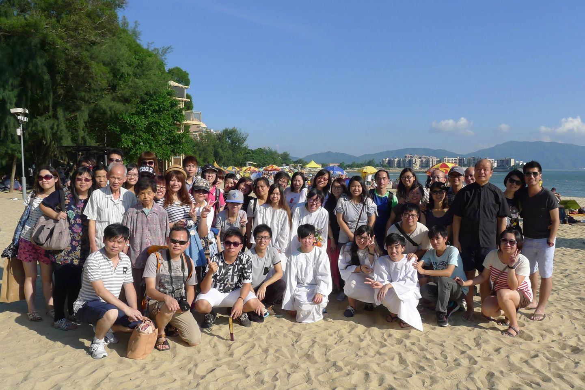

首頁
Home
在這裡，您不只是被接納——您是被愛的。耶穌愛您，我們也愛您。
關於我們
About Us
基督教顯恩堂於1992年由曾漢平牧師帶領，搬遷至上水植堂，至今已33年。教會一直秉持基督耶穌愛世人的心，積極關懷並連繫社區，感恩成為區內一個充滿愛與盼望的屬靈家園。顯恩堂見證了神豐盛的恩典與信實，在社區關懷、青少年事工、家庭牧養及宣教拓展等方面不斷成長與突破。教會深信聖父、聖子、聖靈三位一體之真神，以基督耶穌為信仰核心，並相信聖靈的能力與帶領，立志建立萬國禱告的殿，推動敬拜讚美的文化，使萬民歸主，榮耀主名。
禮拜
Services
禮拜安排：
- 星期六 2:30pm - 6:00pm 青年小組
- 星期六 7:00pm - 9:30pm 聖經學院
- 星期日 10:00am - 11:15am 禱告會
- 星期日 11:30am - 1:30pm 主日崇拜
- 星期日 3:00pm - 6:00pm 職青/婦女/家庭小組
- 星期一/二/三/四 10am - 12:30pm 拉筋班/讚美操/痛症舒緩/美容工作坊
講道
Sermons
活動
Events
請瀏覽本會facebook網頁 https://www.facebook.com/CGGCNTHK/
聯絡我們
Contact Us
地址: 上水新豐路65號2-3樓
電郵: church@cggc.org.hk
電話: 95827316
位置: 查看地圖